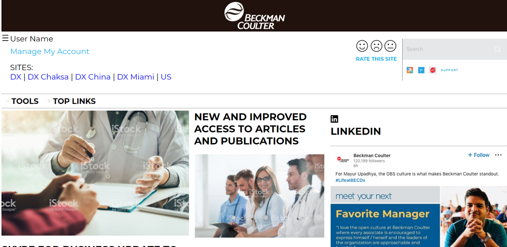

Kina Michie
Web Designer and Developer
About Me
While running my own art business for 8 years, I dealt with the frustration of not having my website structured the way I wanted it to be, so I went back to school to learn how to make that happen. My art background adds to the skills I have acquired to build beautiful dynamic websites customized to fit the functionality a company is looking for. I’m a senior at Brigham Young University Idaho working on my Bachelors of science in Web Design and Development. Through the process of getting my degree, I have obtained a love of coding and seeing a design come to life. I have collaborated with others and worked independently on both the frontend and backend to complete site builds using different computer languages such as HTML, CSS, SASS, SQL, JSON, Javascript, Nodejs, and PHP. I have good organizational skills; I work well with others, and I am self-motivated. I have experience working remotely for a company and getting the tasks assigned completed in a timely manner. Working hard is part of my nature.
Websites
Extrance.io
Although I did not build the website that is on the web, I built a fully functioning copy of this site for my internship.
Beckman Colter
This is also a website I built for my internship. It is not active on the web.